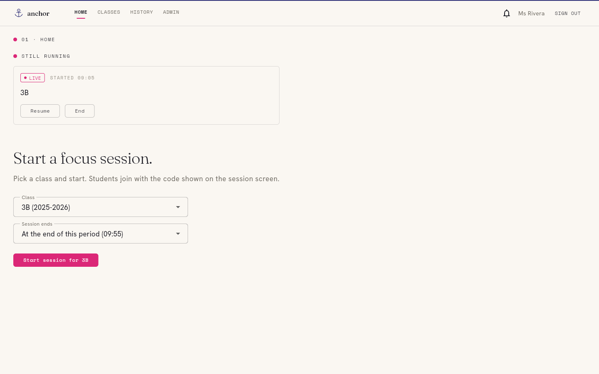
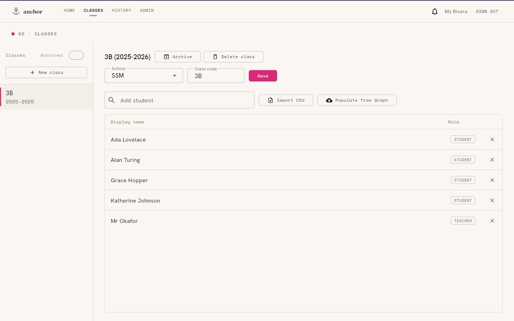
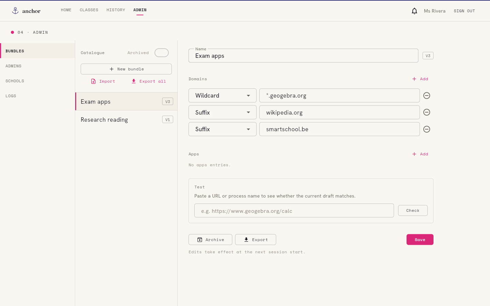
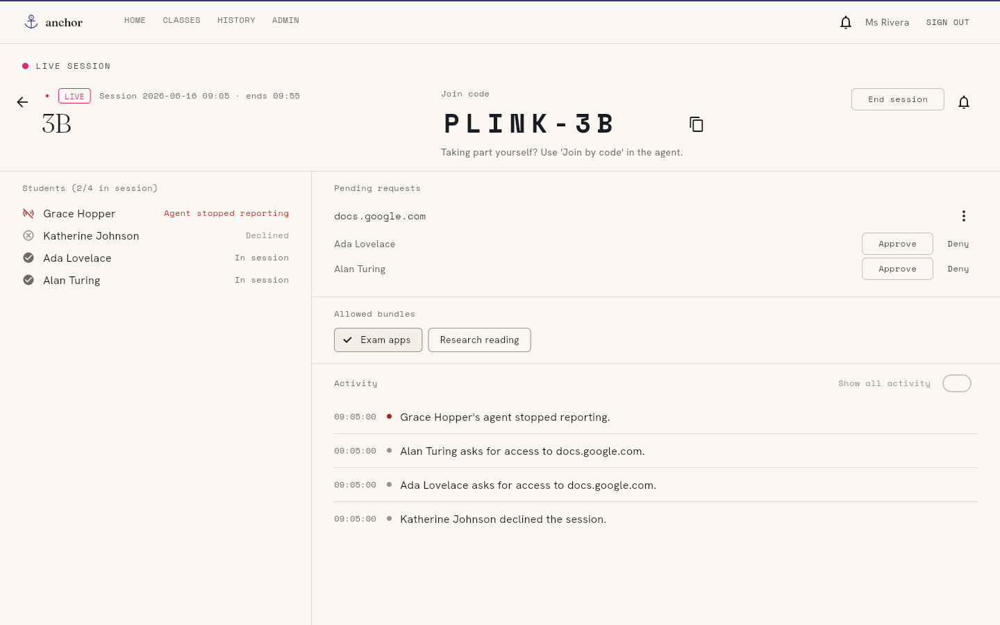
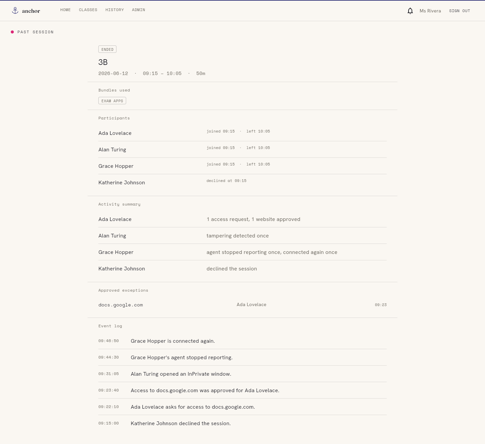
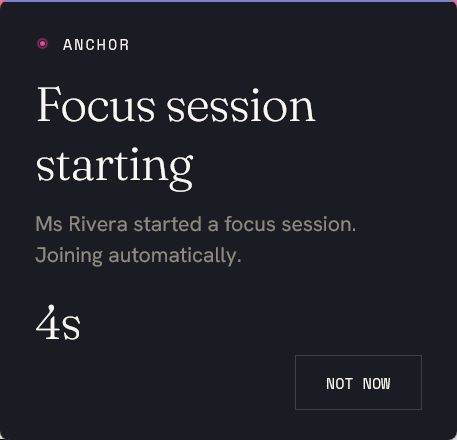
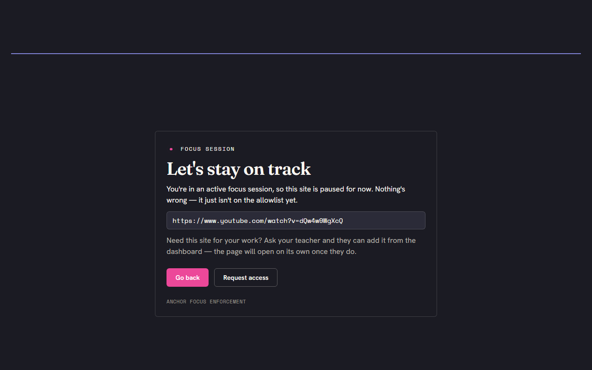
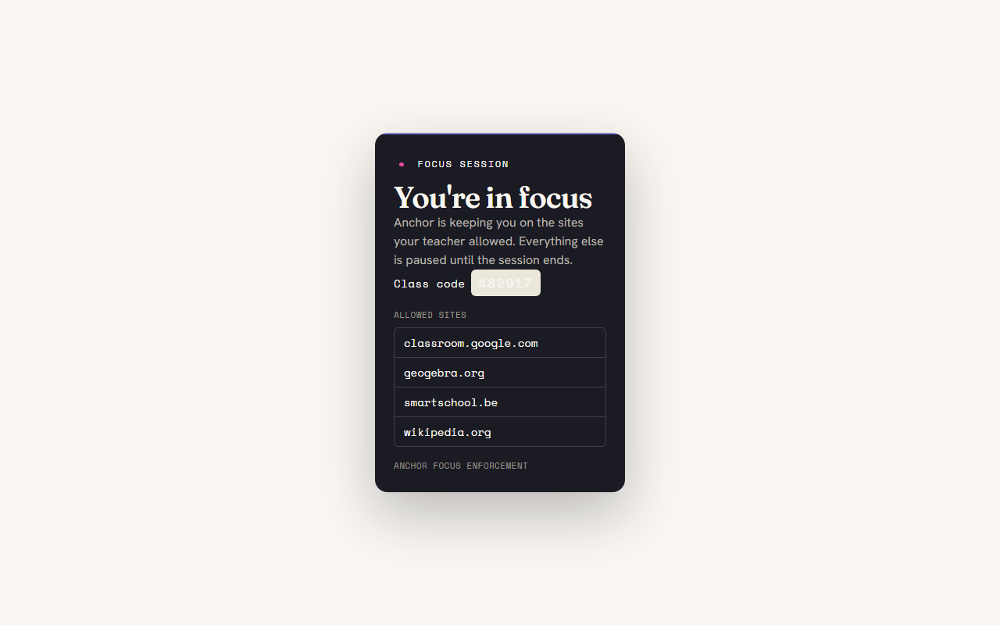
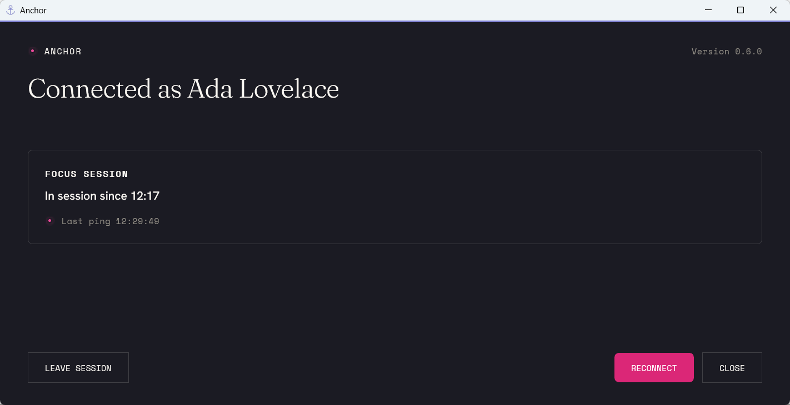
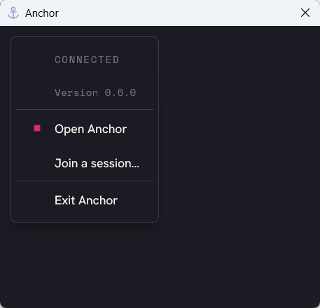

01
Sign in
Open the dashboard and sign in with your school Microsoft account. No separate Anchor password — it uses the account you already have.
Anchor puts you in control of one lesson at a time. You sign in, pick a class, and start a session; each student's device keeps to the apps and websites you allowed, and your dashboard tells you when something needs you. Here is the whole flow, with the real screens you'll use.
The dashboard walkthrough
Everything a teacher does happens in the web dashboard — no install on your side, just a browser. The flow is short on purpose: sign in, pick a class, start, and keep an eye on the live view until you end it.
01
Open the dashboard and sign in with your school Microsoft account. No separate Anchor password — it uses the account you already have.
02
Choose the class you're teaching from the dropdown.
03
Choose when it ends: at the end of this lesson period, which is the default, at the end of the next one for a double period, or at a time you pick. The periods are your school's, entered by an admin; without them you pick a time. Then one button, "Start session for 3B". Every signed-in student in that class is invited automatically; there's a join code on screen for anyone who needs to join by hand.
04
Add or remove the bundles this lesson needs — Microsoft 365, Smartschool, Bingel. Edits push to every device live; nobody has to rejoin.
05
The session view shows who is in the session and a feed of what needs you, as it happens: a student who declines or leaves, a site a student asks for, a tamper signal, a laptop that drops out. "Show all activity" adds the routine events, such as students joining. It doesn't show which apps students use or which pages get blocked.
06
"End session" stops enforcement everywhere at once. If you don't click it, the session ends by itself at the end you chose when you started it. Devices go back to normal, and Anchor stops enforcing and stops reporting. The lesson is over; so is Anchor's reach.




Alerts
During a live session the dashboard tells you when something needs you, also while it sits in a background tab: it plays a short sound and counts what you haven't seen yet in the tab's title. The bell chooses what alerts you (a student asking for a site, a student leaving or declining, an agent that stops reporting, a tamper signal) and whether there is a sound.
It can also show pop-ups on top of your other apps. You turn those on under the bell, and your browser asks your permission once. A pop-up only says what happened, unless you switch on "Show student names and sites in pop-ups": your screen may be projected. These settings are kept in the browser you use.
After the session
When the session ends, the live view closes and the session moves to History, the list of your past sessions. Its page shows who took part and when they joined, declined or left, the sites students asked for and what you approved or turned down, and any tamper signals or laptops that dropped out: as a count per student, and event by event. It holds nothing about which apps a student used or which pages were blocked.
The detailed events are deleted after a while; what stays is a count per student of each kind of event. How long is up to your school; the privacy policy lists the defaults. During the pilot the history also shows the extra test reports listed there.

What your students see
Anchor is calm on the student side too. There's no alarm, no lockout screen, no countdown of strikes — just a few gentle cues that a session is on and the device is keeping to the lesson. Here's every surface a student meets.
When you start the session, a small notice on each device names you and, after a short countdown, joins the session by itself. Joining is the default; a student can choose "Not now", and you see who did.
If a student opens an app that isn't on the allowlist, it's set aside — not closed, so nothing is lost — and a quiet full-screen card offers the allowed apps to carry on with instead.
In Edge, an off-list page is replaced by a friendly block page rather than an error. Its "Request access" button sends the request to your dashboard, where you answer it.
Clicking the extension shows that the session is on, the join code, and the sites that are allowed right now. No mystery about what's enforced.
Anchor sits in the Windows notification area. Its window shows who is signed in and since when they're in the session. "Leave session" asks the student to confirm, and you see that they left. "Close" only hides the window; Anchor keeps running.
Clicking the Anchor icon opens a menu with the connection status, "Open Anchor" and "Join a session…". "Exit Anchor" is offered only outside a session: during one, leaving the session is the way out. If Anchor is stopped some other way, you see that the student's agent stopped reporting.
A student who chose "Not now", left the session, or isn't on the class list joins from the tray menu with "Join a session…" and the code on your session screen. A student who comes back keeps the sites you approved for them.






Soft enforcement
Anchor isn't tamper-proof, and that is by design. When a student steps around it, what you get is a tamper signal in your feed or a laptop that drops out of the session, not a log of what the student did.
A tamper signal is a line in the feed with a red marker, such as "Alan Turing opened an InPrivate window", and a red shield beside the student's name. By then Anchor has paused Edge, or that window, on the student's laptop until it's put right. The privacy policy lists every kind. A laptop that drops out shows as "Agent stopped reporting" until it connects again.